-
Державний Герб України
□□□□□□□□□□□□□□□□□□□□□□□□□□□□□□□□□□□□□□□□□□□□□□□□□□□□□□□□□□□□□□□□□□□□□□□□□□□□□□□□□□□□□□□□□□□□□□□□□□□□□□□□□□□□□□□□□□□□□□□□□□□□□□□□□□□□□□□□□□□□□□□□□□□□□□□□□□□□□□□□□□□□□□□□□□□□□□□□□□□□□□□□□□□□□□□□□□□□□□□□□□□□□□□□□□□□□□□□□□□□□□□□□□□□□□□□□□□□□□□□□□□□□□□□□□□□□□□□□□□□□□□□□□□□□□□□□□□□□□□□□□□□□□□□□□□□□□□□□□□□□□□□□□□□□□□□□□□□□□□□□□□□□□□□□□□□□□□□□□□□□□□□□□□□□□□□□□□□□□□□□□□□□□□□□□□□□□□□□□□□□□□□□□□□□□□□□□□□□□□□□□□□□□□□□□□□□□□□□□□□□□□□□□□□□□□□□□□□□□□□□□□□□□□□□□□□□□□□□□□□□□□□□□□□□□□□□□□□□□□□□□□□□□□□□□□□□□□□□□□□□□□□□□□□□□□□□□□□□□□□□□□□□□□□□□□□□□□□□□□□□□□□□□□□□□□□□□□□□□□□□□□□□□□□□□□□□□□□□□□□□□□□□□□□□□□□□□□□□□□□□□□□□□□□□□□□□□□□□□□□□□□□□□□□□□□□□□□□□□□□□□□□□□□□□□□□□□□□□□□□□□□□□□□□□□□□□□□□□□□□□□□□□□□□□□□□□□□□□□□□□□□□□□□□□□□□□□□□□□□□□□□□□□□□□□□□□□□□□□□□□□□□□□□□□□□□□□□□□□□□□□□□□□□□□□□□□□□□□□□□□□□□□□□□□□□□□□□□□□□□□□□□□□□□□□□□□□□□□□□□□□□□□□□□□□□□□□□□□□□□□□□□□□□□□□□□□□□□□□□□□□□□□□□□□□Факти про Державний Герб України
-
19 лютого 1992 року Верховна Рада України своєю постановою затвердила
Державний Герб незалежної України. Ним став золотий тризуб на синьому щиті — знак
Київської держави часів правління Володимира Великого, що символізує
безперервність тривалого історичного розвитку українського народу. День
Державного Герба України — чудова нагода ознайомитися з підбіркою цікавих фактів
про наш національний символ.Є понад сорок версій, що пояснюють походження тризуба. Одна з
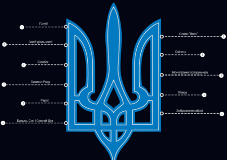
найрозповсюдженіших говорить, що цей давній знак є містичним символом
тривимірності світу. -
Релiгiйна версія стверджує, що це стилізоване зображення голуба — символу Святого
Духу. Також існує популярна версія, що нiбито тризуб — це сокiл, який пiкiрує на здобич.Автори іншої версії вважають, що в тризубі зашифроване слово «воля». Ця версія, до
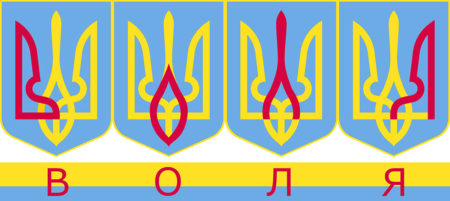
речі, з’явилася вже після затвердження тризуба як герба УНР. Тоді дехто також почав
«розшифровувати» у тризубі початкові літери імен: Володимир, Ольга, Ярослав -
Наші предки використовували тризуб
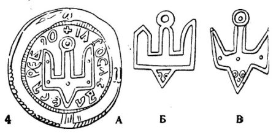
як своєрідний оберіг. Зображення тризуба археологи зустрічали в багатьох пам’ятках культури,
датованих ще першим століттям нашої ери. -
Тризуб — родовий знак Рюриковичів. З історичних джерел відомо, що посли князя
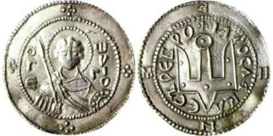
Ігоря при укладенні договорів ставили печатки з тризубом. На монетах часів
Володимира Святославовича з одного боку карбували його портрет, а з іншого —
тризуб. За правління Ярослава Мудрого на монетах карбувалося зображення святого
Георгія та тризуба на звороті. -
Офіційне зображення державного герба УНР з’явилося 22 березня 1918 року – рівно
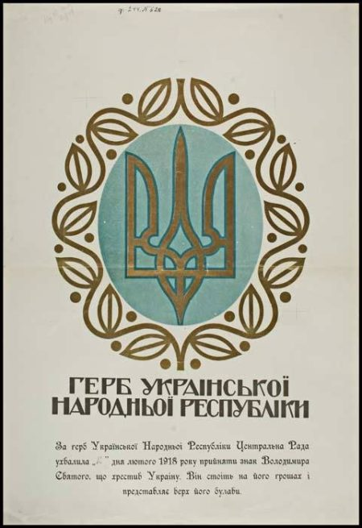
через два місяці після проголошення її незалежності IV Універсалом Центральної Ради. -
Особливим часом для відродження державної символіки стали події зими 2013-2014
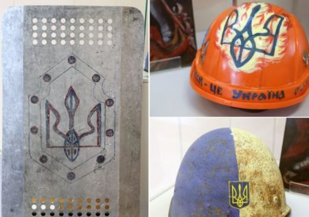
року. На Майдані під час Революції Гідності тризуб малювали на щитах і шоломах. -
У травні 2014 року на фасаді готелю «Парус» у Дніпрі фанати футбольного клубу
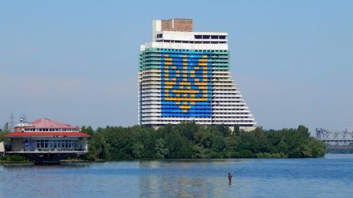
«Дніпро» намалювали найбільший в Україні державний герб.
-
-
Державний прапор України

Щорічно 23 серпня відзначають свято, присвячене одному з головних
українських символів – День Прапора України. Що він символізує?
Уже сотні років синьо-блакитні та жовто-золоті кольори супроводжують
українців у періоди труднощів, в епохи розквіту національної ідеї та протягом
боротьби за незалежність.Історія нашого стяга – справді багата і цікава – показує всю історію
української державності. Суспільне Культура зібрало факти та легенди
про державний символ України.10 фактів про синьо-жовтий стяг
-
Перший прапор
Перші згадки об'єднання синього і жовтого кольору на офіційній символіці
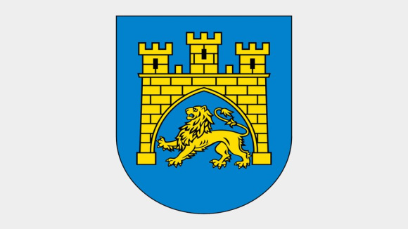
датовані 1256 роком – це був герб Львова із зображенням жовтого лева на
блакитному тлі, який місту подарував князь Данило Галицький.
Також золотий і синій кольори використовували на гербі
Галицько-Волинського князівства.Герб Львова, 1256 рік.
-
Прапор з жовтою смугою вгорі
Офіційно синьо-жовту атрибутику почали використовувати у 1848 році,
від початку українського національного відродження в Галичині та Буковині.
Головна Руська рада оголосила своїм гербом лева на блакитному тлі й
синьо-жовтий прапор. Цей самий прапор, тільки з жовтою смугою вгорі,
був державним стягом УНР.Один стяг
Під синьо-жовтим відбулися три проголошення Української
державності: 1917, 1941 та 1990 року. -
Догори дриґом
Існує міф, що прапор має бути не синьо-жовтим, а жовто-блакитним, і те,
що його перевернули – є головною причиною нещасть, які випадають
на долю України.Раніше можна було зустріти обидва варіанти використання кольорів,
а після повалення Гетьманату в грудні 1918 уряд УНР затвердив
теперішню послідовність смуг."30 років Декларації про державний суверенітет. Факти про документ"
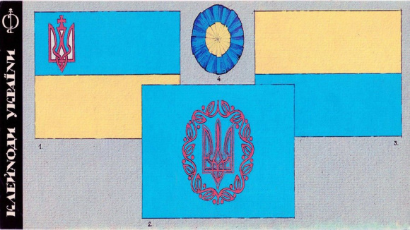 -
Пшениця чи Бог
За однією версією, синій на прапорі символізує небо, а жовтий – колосся пшениці.
За іншою, це символи двох головних стихій природи: води та вогню.
З релігійного погляду, жовтий уособлює Творця, а блакитний – усе земне. -
ХХ століття
Вперше після Лютневої революції 1917 року синьо-жовті прапори з'явилися в Києві,
Одесі та Харкові. 17 березня того ж року було проголошено про організацію
Центральної ради. Відтоді у Києві публічно та на офіційному рівні з'являються
символи української державності.Після розпаду СРСР 18 вересня 1991 року президія Верховної ради затвердила
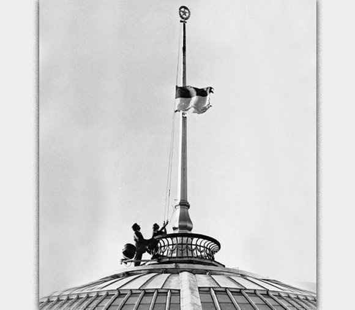
за синьо-жовтим поєднанням кольорів статус офіційного прапора країни.4 вересня 1991 року над Верховню Радою вперше підняли синьо-жовтий прапор.
-
Два роки у в'язниці
За радянських часів зберігання синьо-жовтого полотнища вважалося злочином,
за який могли ув’язнити на два роки. Поява українського прапора у громадських
місцях розцінювалась як надзвичайна подія.Прапори-гіганти
Прапори-рекордсмени. У 2014 році найбільший прапор розгорнули в Артемівську
(з 2016 року місто перейменували в Бахмут) – 300-кілограмовий біколор площею 2400 м².
Найдовший сягає 9,5 км і знаходиться на Тернопільщині. На центральній площі
Житомира можна побачити найбільший прапор на фасаді будівлі."Як приймали Конституцію України. Тисячолітня хроніка подій"
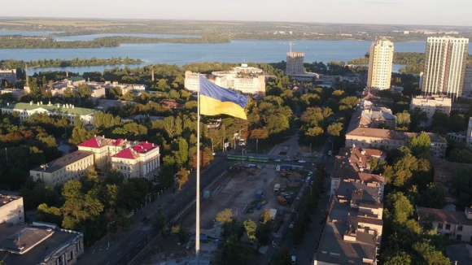Прапор у Дніпрі, 2018 рік.
Дніпровський прапор у 2018 році має два рекорди: як найбільший прапор над містом і як прапор
з найвищим флагштоком – його висота 72 метри. Ще один класний рекорд: у 2016 році українські
альпіністи встановили синьо-жовтий прапор на висоті 6872 метри на вершині Охос-дель-Саладо
в Андах, найвищого вулкана у світі. -
Футбол, прапор, гопак
27 липня 1976 року під час футбольного матчу в Монреалі між збірними НДР і СРСР
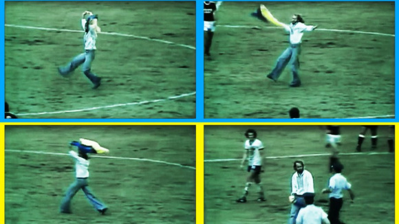
на поле у вишиванці та з прапором України в руках вибіг уболівальник Данило Мигаль
та станцював гопак. Акція тривала 15 секунд, після чого втрутилась поліція.
На самому стадіоні 150 українців вивісили плакат із написом "Свобода Україні!".
Мигаль пояснив, що хотів своїм вчинком драматизувати долю українського народу
і підтримати українських футболістів. -
Стяг "кіборгів"
Під час захисту Донецького аеропорту “кіборги”, попри постійні обстріли, знов
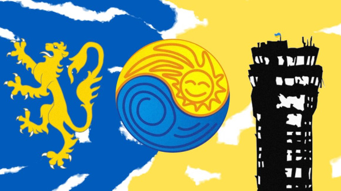
і знов вивішували прапор над будівлями. Синьо-жовтий весь цей час майорів
над диспетчерською вежею, аж поки ворог її не знищив. Нині двічі на рік цей стяг
з Донецького летовища підіймають над військовою частиною у Кропивницькому.
-
-
Державний Гімн України
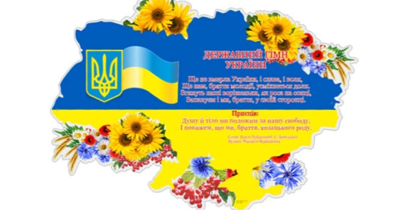15 січня 1992 року, Верховна Рада затвердила музичну редакцію Державного гімну, що знайшло
своє відображення у Конституції України.Що ви могли не знати про один із головних символів країни
-
Вірш “Ще не вмерла Україна” Павло Чубинський написав восени 1862 року у Києві,
у домі купця Лазарева на вулиці Великій Васильківській, 122. -
Павло Чубинський був звинувачений шефом поліції в авторстві:
“возмутительных песен и прокламаций”, “за вредное влияние на умы простолюдинов”.
У 23-річному віці він був висланий на проживання під наглядом поліції в Архангельську
губернію саме за авторство славетного вірша. -
Автор музики Михайло Вербицький спочатку написав музику для гітари,
а вже згодом адаптував її для хору. -
Гімн України був вперше публічно виконаний 10 березня 1865 року
у Перемишлі під час концерту, присвяченому пам’яті Тараса Шевченка. -
Лише Іван Франко та Леся Українка визнали “Ще не вмерла Україна” як національний гімн.
-
Після проголошення незалежної Української держави в січні 1918 року пісня
“Ще не вмерла Україна” звучала як національний гімн при УНР (Українська Народна Республiка),
ЗУНР (Західноукраїнська Народна Республiка), Гетьманаті та Директорії. -
Хоча протягом національно-визвольних змагань “Ще не вмерла Україна” звучала як гімн,
однак офіційне затвердження вона одержала лише 15 березня 1939 року –
як гімн Карпатської України. -
Коли постало питання гімну в роки Радянського Союзу, “Ще не вмерла Україна”
одразу відкинули. Керівництво вимагало, аби в новому гімні стверджувалося
що Україна – держава, що входить до складу СРСР, що вона там “між рівними – рівна,
між вільними – вільна” та обов’язково повинна згадуватися комуністична партія,
яка веде Україну до “світлого майбутнього”. -
Автором радянського гімну для УРСР став Павло Тичина з віршем “Живи, Україно,
прекрасна і сильна”, що існував у 1949-1991 рр. -
За пропозицією колишнього президента України Леоніда Кучми перша строфа гімну
була змінена:”Ще не вмерла України і слава, і воля”.
-
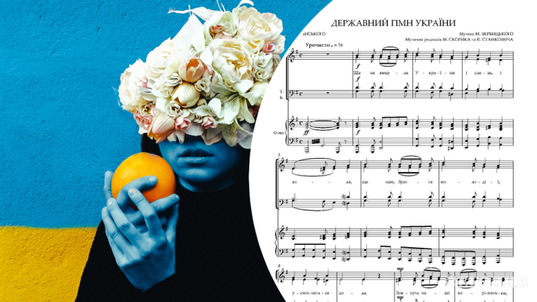